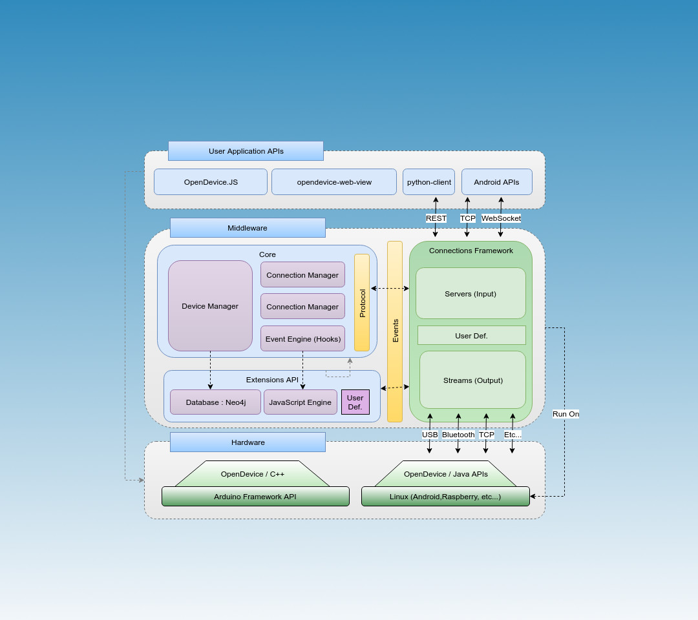

Connect and Control Anything from Anywhere and sync in real-time
Open IoT (Internet Of Things) Platform and Framework.
Plug your device (Arduino/Raspberypi/Other) to the Cloud and sync in real-time.
Getting Started GITHUBWhat can we help you with?
OpenDevice Features
The OpenDevice APIs enables you to prototype interactive connected products quickly and easily. It has embedded servers that support various protocols like: MQTT, REST and WebSocket, avoiding to install additional components.
